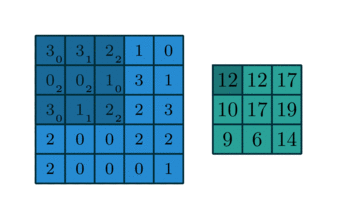
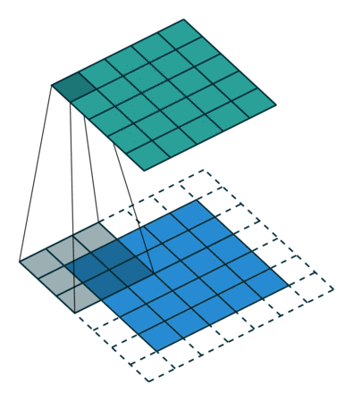
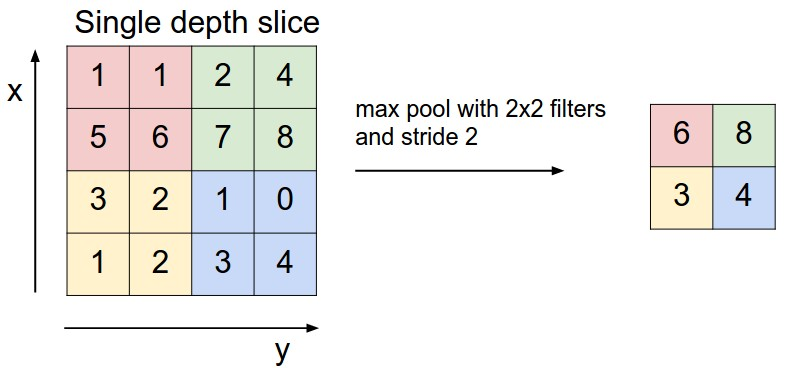

Neural Networks
- Uses
- Basic concepts: Perceptron, activations, loss functions
- Multilayer perceptron
- Gradient Descent and Back propagation
- Convolutional Neural Networks
- Transfer learning in CNN
Keras
- Basic API
- MLP implementation
- CNN implementation
Neural Networks
Getting Started
Gunnvant Singh
SME
Agenda
Neural Networks : Uses
- Typical use case for Neural Networks is in the field of computer vision and NLP
- Traditional methods and analysis are not going to be replaced by neural networks
- This session will introduce Multi Layer Perceptron Model in the classification setting, aim: to make you self explorers.
- Current state of the art in Neural Networks: Convolutional Neural Networks, Recurrent Neural Networks
Basic Concepts
- Central Concepts:
- Layers: Input, Hidden and Output
- Activations
- Cost functions
Basic Concepts
- Layers: Input, Hidden and Output

Basic Concepts
- Activation functions and Cost Functions

- For example : Excel Demo
Gradient Descent: Optimising a convex function
We have seen that there is always a cost function, to minimise cost, Gradient Descent and its variations are used.
The primary identity is:
\[w^{t+1}=w^{t}-\eta \nabla C(w)\]
Here \(w^{t+1}, w^{t}\) are model parameter vectors, \(C(w)\) is the cost function and \(\nabla\) is the gradient
Gradient Descent: Optimising a convex function
- This is a simplistic representation:

Backpropagation:
- Different weight vectors in different layers

- A more involved (one of the best discussions I could find) can be accessed from here http://neuralnetworksanddeeplearning.com/chap2.html
Convolutional Neural Networks
Flattening an image and using it as an input has some disadvantages:
- There is information in spatial arrangement, flattening might distroy that
- The number of weights to be estimated will increase if neural networks with many layers and moderate resolution is used. (224*224 pixels and RGB channels)
CNN reduce the number of weights to be estimated and also preserve the spatial information
Convolutional Neural Networks
- What is convolution?

- Kernel

Convolutional Neural Networks
- Related terms: Padding

- A couple of factors affect the ouput size of output from a convolving kernel:
- Zero padding
- Kernel Size
- Strides
Convolutional Neural Networks
- Effect of no padding, unit strides:

Convolutional Neural Networks
- Double padding, unit strides:

Convolutional Neural Networks
- Same size output is also possible (is desirable)

Convolutional Neural Networks
- Neural Network with convolutional layers

- Assume there is a 5 by 5 kernel with a bias term and there are 11 such kernels in this layer, the how many parameters will be needed? Compare with a vaniall MLP?
Convolutional Neural Networks
- CNNs not only have convolutional layers, they also have pooling layers, that reduce the size of image

Convolutional Neural Networks
- This is how pooling layer works:

Convolutional Neural Networks
- Sample complete CNN architecture (LeNet5)